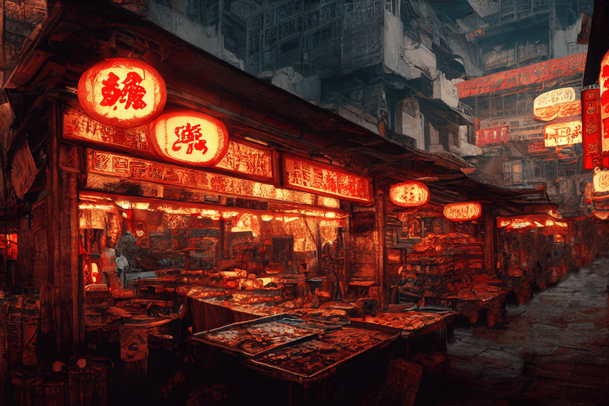
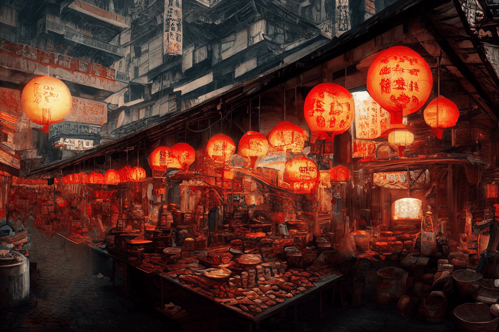
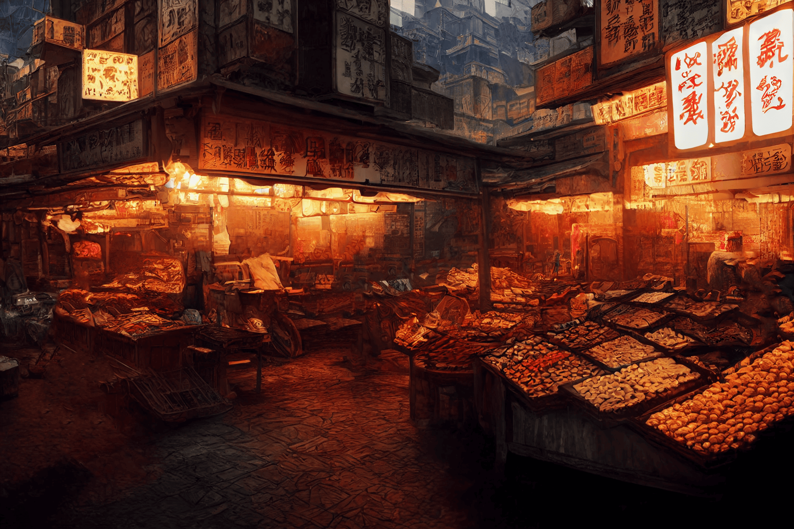
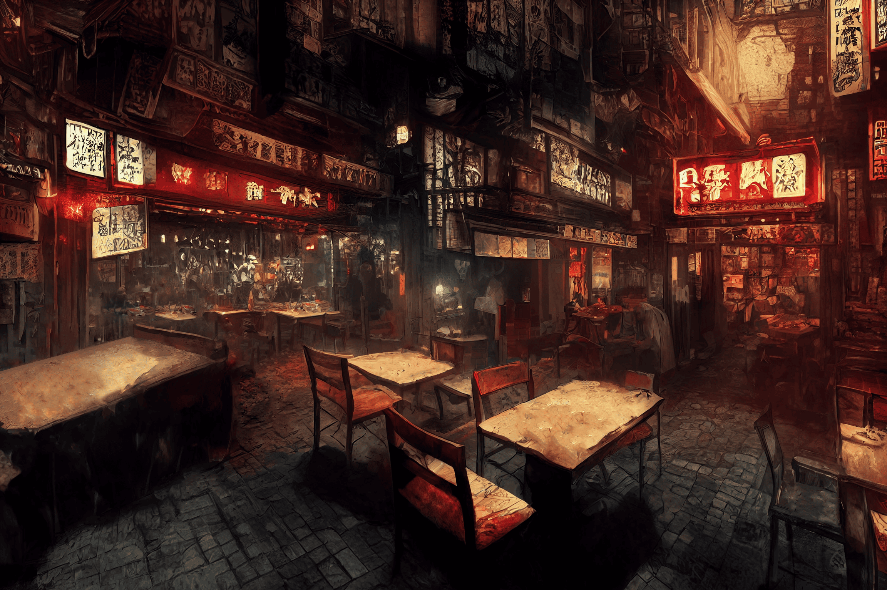
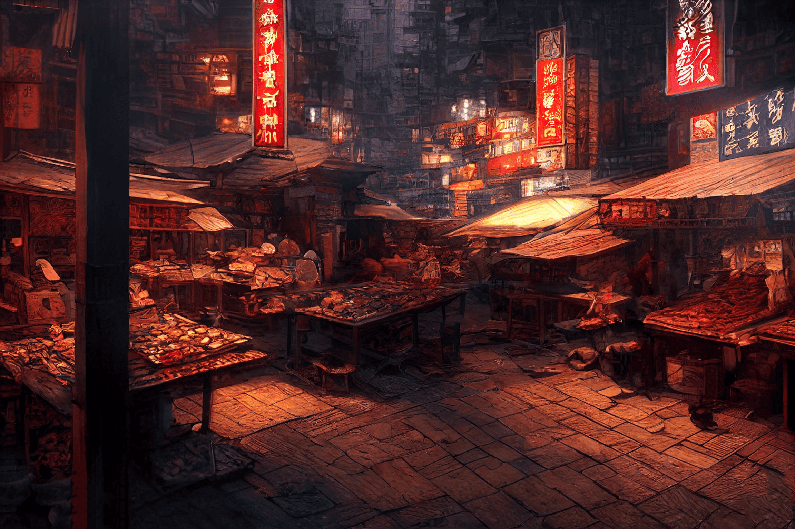
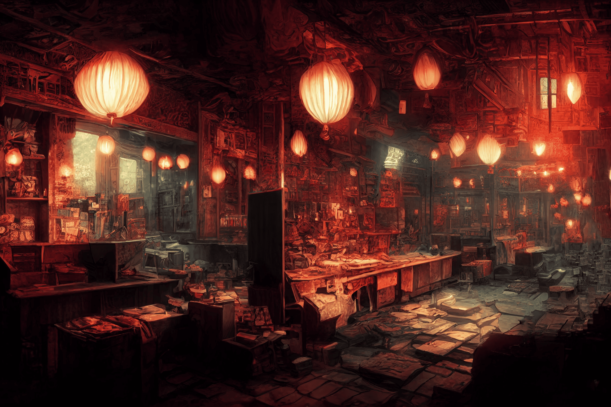
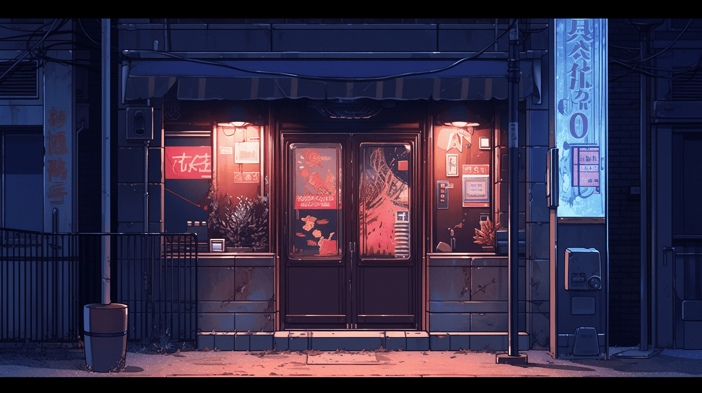
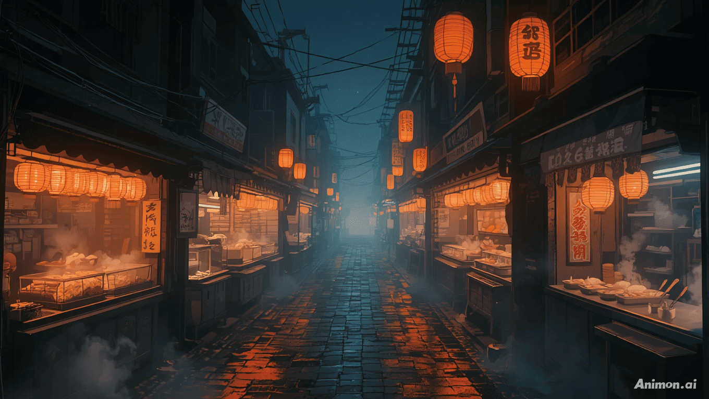

組織概要
拷問からテーラー、ネイルサロンまで。とにかく幅広くありとあらゆる仕事を受け入れるのが「呑紅街」の特徴である。
一番得意とするのはもちろん拷問だが、それ以外でもなんだって受け入れる。文字通りの何でも屋として、彼らはこの街で認識されているのである。
「呑紅街」は６色の中で最大の人数を誇る。男女を問わず、能力を問わず、人か人でないかも問わず。彼らは全ての人材を吸収する。その貪欲さこそが「呑紅街」の最大の強さなのだろう。
区画について
最大の面積を誇る。区画の大半は居住地区が占めるが、中央寄りの一部には様々な商店が立ち並ぶ。
服やアクセサリーなどのショップは「赤組」の管轄にしか基本的に存在しない。
街外れにはスラム街が存在する。「赤組」は大量の人を受け入れるが、彼ら全てに衣食住をきちんと提供してやるなんていうだって明言したことはない。実力がなかったり、運が悪かった人々は「赤組」の中でも役割を与えられず、スラムまで流れ着くのである。スラムの外れには表の街と暗黒中華街との接続地である。また「赤組」の区画の三分の一程度は、人外用の専用特別地区として割譲されている。